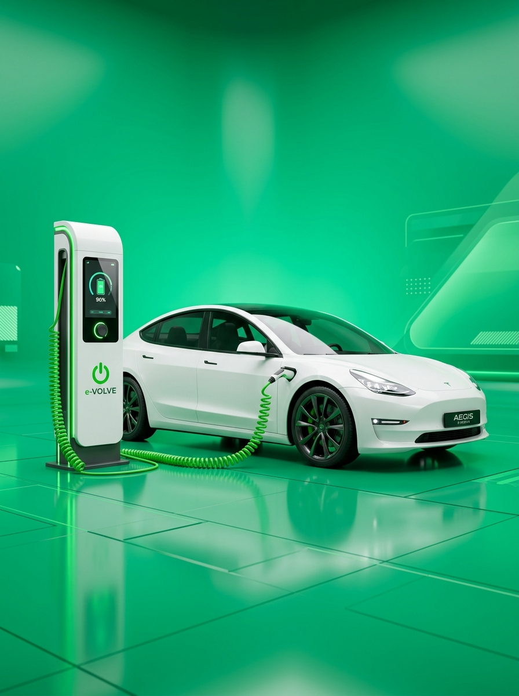

Hongqi E-HS9 Resmi Hadir di Indonesia, SUV Listrik Ultra-
Pasar mobil listrik premium di Indonesia te... Baca Selengkapnya
Nikmati efisiensi berkendara tanpa emisi dengan performa tinggi dan teknologi otonom terkini dari Elevara.
Mobil listrik adalah kendaraan yang sepenuhnya atau sebagian digerakkan oleh motor listrik bertenaga baterai isi ulang tanpa gas buang.
Baterai menyalurkan arus listrik ke inverter cerdas, yang mengatur daya ke motor listrik untuk menggerakkan roda secara instan.
Nol emisi pipa knalpot, biaya pengisian daya jauh lebih terjangkau, akselerasi responsif, dan kabin yang jauh lebih hening.
 City Eco
City Eco
 Sport Coupe
Sport Coupe
 Luxury Flagship
Luxury Flagship
Kendaraan listrik tidak mengeluarkan CO2 dan gas rumah kaca, sehingga ramah lingkungan.
Karena komponen lebih sedikit, kendaraan listrik tidak memerlukan banyak perawatan, juga tidak banyak komponen yang memerlukan penggantian meskipun digunakan dalam jangka waktu lama.
Motor listrik bereaksi lebih cepat dibandingkan mesin mekanis, sehingga menawarkan kelincahan dan torsi besar sehingga menghasilkan pengendaraan yang lebih santai dan polusi suara lebih sedikit.
Mobil listrik menggunakan komponen yang jauh lebih sedikit dibandingkan mobil ICE sehingga memungkinkan rancangan kabin luas dan banyak ruang penyimpanan.
Pengisian daya membutuhkan durasi lebih lama dibanding mengisi bensin konvensional, berkisar antara 20–30 menit (DC Fast Charging) hingga 6–8 jam jika menggunakan charger rumah.
Meskipun jaringan stasiun pengisian daya bertumbuh pesat di kota-kota besar dan jalan tol, ketersediaan di daerah terpencil masih dalam proses ekspansi berkelanjutan.
Harga beli mobil listrik baru umumnya masih sedikit lebih tinggi dibandingkan mobil konvensional, meskipun terkompensasi oleh biaya operasional harian yang sangat murah.
Jarak tempuh baterai dapat terpengaruh oleh gaya mengemudi agresif, kecepatan tinggi konstan di jalan tol, suhu ekstrim, atau membawa beban muatan maksimal.
Kepadatan energi tinggi dengan proteksi termal ganda untuk keselamatan maksimal.
Mengonversi energi pengereman menjadi daya baterai cadangan secara otomatis.
Pengisian daya kilat dari 10% ke 80% hanya dalam 20–30 menit di stasiun DC.
Fitur keselamatan pintar adaptif mulai dari pengereman darurat hingga lane assist.
Kontrol AC jarak jauh, cek baterai, dan kunci mobil melalui smartphone Anda.
Pembaruan sistem fitur mobil otomatis melalui internet tanpa perlu ke bengkel.

Sebagian besar kerusakan terjadi ketika mobil diparkir dalam suhu yang sangat tinggi. Untuk menjaga suhu tetap terkendali untuk efisiensi optimal, sistem kontrol suhu otomatis di EV akan bekerja dan menguras baterai.
Mengisi daya baterai hingga penuh bukanlah ide yang baik karena akan memengaruhi masa pakai unit secara keseluruhan. Kebanyakan kendaraan listrik saat ini dilengkapi dengan sistem manajemen baterai yang membantu menghindari pengisian daya berlebih.
Meskipun fast charging menawarkan kenyamanan luar biasa saat baterai hampir habis, melakukan hal ini secara sering akan membebani baterai dan mengurangi usianya.
Para ahli tidak menyarankan membiarkan EV dalam waktu lama dengan daya baterai terisi penuh atau kosong, karena akan menyebabkan degradasi. Di sini pengisi daya berjangka waktu akan berguna.
Masa pakai baterai dapat ditingkatkan dengan cara berkendara efisien. Mencakup pengereman regeneratif, akselerasi terkontrol, dan tekanan ban yang tepat.


Pasar mobil listrik premium di Indonesia te... Baca Selengkapnya
Pabrikan asal Hamamatsu, Suzuki, ikut r... Baca Selengkapnya

BYD sudah cukup agresif dalam menggelon... Baca Selengkapnya

Lanskap industri otomotif nasional sa... Baca Selengkapnya

Pemerintah bersama konsorsium EV mempercepat p... Baca Selengkapnya
Kementerian Keuangan memastikan keringanan PPN... Baca Selengkapnya
Baterai Elevara dirancang untuk bertahan 8 hingga 10 tahun pemakaian normal. Kami memberikan garansi resmi baterai hingga 8 tahun atau 160.000 km.
Dengan Home Wallbox (AC Charger), pengisian penuh membutuhkan waktu 6-8 jam. Sedangkan dengan DC Fast Charging di SPKLU, pengisian 10% ke 80% hanya membutuhkan waktu sekitar 20-30 menit.
Ya, seluruh sistem kelistrikan dan baterai memiliki sertifikasi tahan air IP67/IP68 dengan sistem pemutus arus otomatis (circuit breaker) yang sangat aman dari korsleting.
Mobil listrik tidak memerlukan ganti oli mesin. Servis berkala hanya meliputi pengecekan rem, rotasi ban, filter kabin AC, dan pemindaian diagnostik sistem komputer setiap 15.000 km.
📍 Jl. Otomotif Listrik No. 88, Jakarta Selatan
✉️ Email: info@elevara.co.id
📞 Telp: (021) 555-0199 / WA: 0812-3456-7890
⏰ Jam Operasional: Senin - Minggu (08.30 - 20.00 WIB)